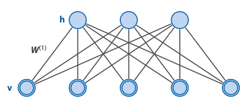
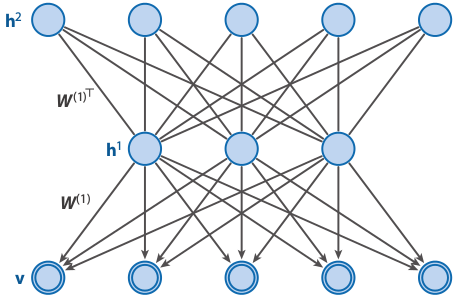
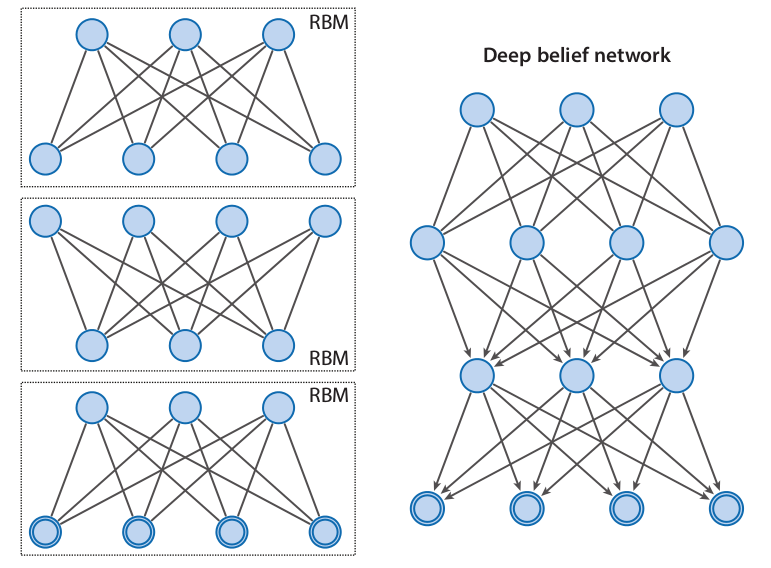
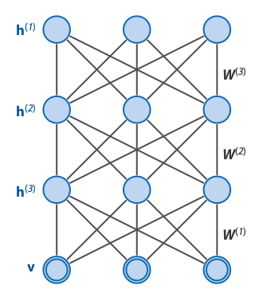
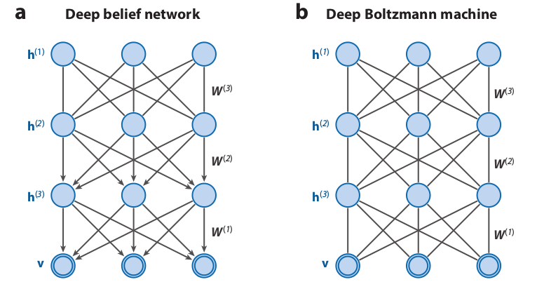
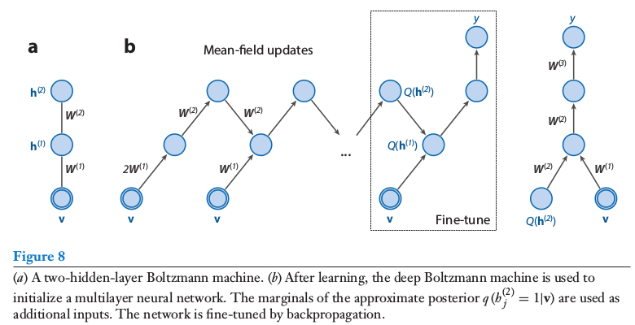
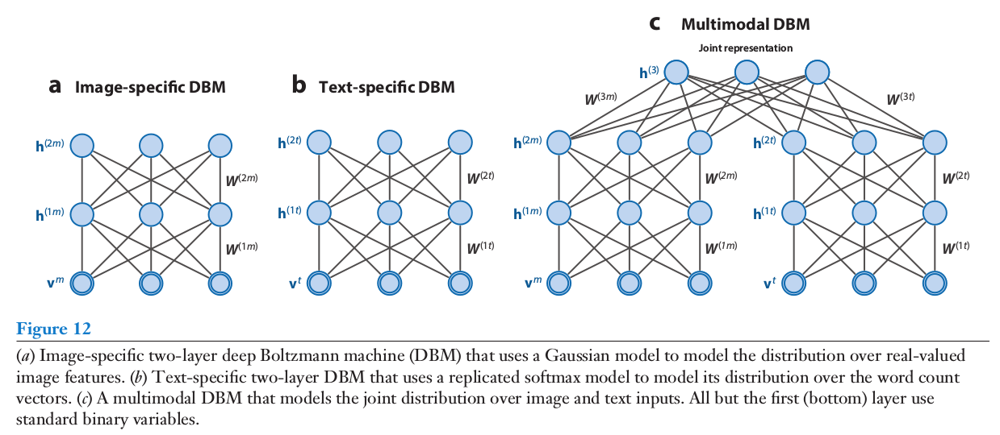

Machine Learning and Neural Networks
Roberto Santana and Unai Garciarena
Department of Computer Science and Artificial Intelligence
University of the Basque Country
Deep Neural Networks: Table of Contents
Deep neural networks
Types of DNNs
- Deep Belief Nets (DBNs).
- Deep Boltzmann Machines (DBMs).
- AutoEncoders (AEs).
- Convolutional Neural Networks (CNN).
- Recurrent Neural Networks (RNNs) and LSTM.
- Generative Adversarial Networks (GAN).
R. Salakhutdinov. Learning deep generative models. Annual Review of Statistics and Its Application. Vol. 2. Pp. 361-385. 2015.
P. Smolensky. Information processing in dynamical systems: Foundations of harmony theory. Technical report, DTIC Document, 1986.
Restricted Boltzmann machines
Review
Network architecture
-

Characteristics
- It is a Boltzmann Machine where there are no connections either between visible units or between hidden units.
- Like BMs, they learn to model the probability distribution of their inputs.
- They are probabilistic and generative models and can be used to make inference.
- Successfully applied to image classification, speech recognition, and other ML tasks.
Restricted Boltzmann machine
Energy function
\[ E(v,h) = -\sum_i v_ib_i -\sum_k h_kd_k -\sum_{i,k} v_ih_k w_{i,k} \]
\( v \): visible units.
\( h \): hidden units.
\( w \): bidirectional weights.
\( i,k \): indices of the units.
\( b_i \): bias visible units.
\( d_k \): bias hidden units.
R. Salakhutdinov. Learning deep generative models. Annual Review of Statistics and Its Application. Vol. 2. Pp. 361-385. 2015.
P. Smolensky. Information processing in dynamical systems: Foundations of harmony theory. Technical report, DTIC Document, 1986.
Restricted Boltzmann machines
Difference to Boltzmann machines
The visible nodes are conditionally independent among them given the hidden nodes.
The hidden nodes are conditionally independent among them given the visible nodes.
Boltzmann distribution
The probability distribution of any global state is computed as: \[ p({\bf{v}},{\bf{h}}) = \frac{e^{-E({\bf{v}},{\bf{h}})}}{Z}, \]
where \(Z\) is the normalizing constant: \[ Z = \sum_{{\bf{x}},{\bf{y}}} e^{-E({\bf{v}},{\bf{h}})} \]
Marginal probabilities
The probabilities of visible units are the sum of the probabilities of all the joint configurations that contain them: \[ p({\bf{v}}) = \sum_{{\bf{h}}} p({\bf{v}},{\bf{h}}) = \frac{\sum_{{\bf{h}}} e^{-E({\bf{v}},{\bf{h}})}}{Z}. \]
RBM Learning Algorithm: Contrastive Divergence
- For each training instance \( {\bf{x}} \), set the states of the visible units to \(x_1,\dots,x_n \).
- Compute the states of the hidden units \(h_1,\dots,h_{|H|} \) using: \[ \begin{align} z_j(t) & = d_j + \sum_i w_{ij} s_i(t) \\ p(h_j(t)=1) &= \sigma(z_j) = \frac{1}{1+e^{-z_j}} \end{align} \]
- Compute the states of the visible units using the corresponding stochastic equations for visible units. That way we get some estimated values \(\dot{x}_1,\dots, \dot{x}_{n} \).
- Compute again the states of the hidden units using the same stochastic equations. That way we get: \(\dot{h}_1,\dots, \dot{h}_{|H|} \).
- Finally, the connection weights are updated using: \[ \begin{align} W(t+1) &= W(t) + \eta \left ( {\bf{x}} {\bf{h}}^{\top} - {\bf{\dot{x}}} {\bf{\dot{h}}}^{\top} \right ) \\ b(t+1) &= b(t) + \eta ({\bf{x}} -{\bf{\dot{x}}}) \\ d(t+1) &= d(t) + \eta ({\bf{h}}-{\bf{\dot{h}}}) \end{align} \]
A. Geron. Hands-On Machine Learning with Scikit-Learn and TensorFlow. Concepts, Tools, and Techniques to Build Intelligent Systems. O'Reilly. 2017.
Graphical models and probabilistic inference
Probabilistic graphical models

Probabilistic inference
- Probabilistic reasoning addresses problems in the presence of uncertainty.
- In graphical models, probabilistic inference is the problem of computing a conditional probability distribution over values of some nodes (the hidden or unorserved nodes).
- Usually, we also want to infer some marginal probabilities in the model given the evidence.
M-L. Moullec et al. Toward System Architecture Generation and Performances Assessment Under Uncertainty Using Bayesian Networks. Journal of Mechanical Design. Vol. 135. No. 4. 2013.
Graphical models and probabilistic inference
Gibbs Sampling
- \( t \leftarrow 0 \)
- Choose an arbitrary starting point \( x^t = (x_1^t,x_2^t,\dots, x_n^t) \). \( t \leftarrow t+1\)
- Obtain \(x_1^t\) from conditional distribution \[ \hat{p} \left( x_1^t | x_2^{t-1}, x_3^{t-1}, \dots, x_n^{t-1} \right) \]
- Obtain \(x_2^t\) from conditional distribution \[ \hat{p} \left( x_2^t | x_1^{t}, x_3^{t-1}, \dots, x_n^{t-1} \right) \]
- \( \dots \dots \dots \)
- Obtain \(x_n^t\) from conditional distribution \[ \hat{p} \left( x_2^t | x_1^{t}, x_2^{t}, \dots, x_{n-1}^{t} \right) \]
- Unless stop condition is satisfied, go to Step 3.
I. Goodfellow and Y. Bengio and A. Courville. Deep Learning. Chapter 20. Deep Generative Models. MIT Press. 2016.
Deep Belief Networks
Network architecture
-

Characteristics
- Like RBMs, DBNs learn to reproduce the probability distribution of their inputs.
- They are probabilistic and generative models.
- Contain many layers of latent variables.
- It can be seen as different RBMs "stacked" together.
R. Salakhutdinov. Learning deep generative models. Annual Review of Statistics and Its Application. Vol. 2. Pp. 361-385. 2015.
I. Goodfellow and Y. Bengio and A. Courville. Deep Learning. Chapter 20. Deep Generative Models. MIT Press. 2016.
Deep Belief Networks
Network architecture
Characteristics
- Like in an RBM, there are no intralayer connections.
- The connections between the two top layers are undirected.
- The connections between all other layers form a directed sigmoid belief network.
- In comparison with the RBM, it can capture much more structure in high-dimensional spaces.
R. Salakhutdinov. Learning deep generative models. Annual Review of Statistics and Its Application. Vol. 2. Pp. 361-385. 2015.
I. Goodfellow and Y. Bengio and A. Courville. Deep Learning. Chapter 20. Deep Generative Models. MIT Press. 2016.
Deep Belief Networks
Factorization of the probability
A DBN with \(l\) hidden layers contains \(l\) weight matrices: \( {\bf{W}}^1, \dots, {\bf{W}}^1 \) and \(\; l+1\) bias vectors \( {\bf{b}}^0, \dots, {\bf{b}}^{l+1} \), with \( {\bf{b}}^0 \) providing the biases for the visible layer.
The probability distribution represented by the DBN is given by: \[ P({\bf{v}},{\bf{h}}^1, \dots,{\bf{h}}^l) = P({\bf{v}}|{\bf{h}}^{1}) \left ( \prod_{k=1}^{l-2} P({\bf{h}}^{k}|{\bf{h}}^{k+1}) \right) P({\bf{h}}^{l-1},{\bf{h}}^{l}) \]
\[ P(v_i=1 |{\bf{h}}^{1}) = \sigma \left( b_i^0 + {{\bf{W}}_{:,i}^1}^{\top} {\bf{h}}^{1} \right) \; \forall i \]
\[ P(h_i^k=1 |{\bf{h}}^{k+1}) = \sigma \left( b_i^k + {{\bf{W}}_{:,i}^{k+1}}^{\top} {\bf{h}}^{k+1} \right) \; \forall i \; \forall k \in 1, \dots, l-2 \]
\[ P({\bf{h}}^{l}|{\bf{h}}^{l-1}) \propto exp\left( {{\bf{b}}^{l}}^{\top} {\bf{h}}^{l} + {{\bf{b}}^{l-1}}^{\top} {\bf{h}}^{l-1} + {\bf{h}}^{l-1} {{\bf{W}}_{:,i}^{l}}^{\top} {\bf{h}}^{l} \right) \]
I. Goodfellow and Y. Bengio and A. Courville. Deep Learning. Chapter 20. Deep Generative Models. MIT Press. 2016.
Deep Belief Networks
Factorization of the probability
\[ P({\bf{v}},{\bf{h}}^1, {\bf{h}}^2) = P({\bf{v}}|{\bf{h}}^{1};W^1) P({\bf{h}}^{1},{\bf{h}}^{2};W^2) \]
\(\theta = \{W^1,W^2\} \) are the model parameters.
\( P({\bf{v}}|{\bf{h}}^{1};W^1) \) represents the probability of the sigmoid belief network.
\( P({\bf{h}}^{1},{\bf{h}}^{2};W^2) \) is the joint distribution defined by the second layer RBM.
\[ P({\bf{v}} |{\bf{h}}^{1};W^1) = \prod_i p(v_i|{\bf{h}}^{1};W^1) \]
\[ P(v_i=1 |{\bf{h}}^{1};W^1) = \sigma \left(\sum_{j} W_{i,j} h_j^{1} \right) \; \forall i \]
\[ P({\bf{h}}^{1},{\bf{h}}^{2};W^2) = \frac{1}{Z(W^2)} exp\left({\bf{h}}^{1} W^2 {\bf{h}}^{2} \right) \]
Example: DBN with two hidden layers
We consider a DBN with two hidden layers, \({ \bf{h}}^1 \) and \({ \bf{h}}^2 \).
Network architecture
R. Salakhutdinov. Learning deep generative models. Annual Review of Statistics and Its Application. Vol. 2. Pp. 361-385. 2015.
Learning Deep Belief Networks
-

A DBN with \(l\) hidden layers contains \(l\) weight matrices: \( {\bf{W}}^1, \dots, {\bf{W}}^1 \) and \(l+1\) bias vectors \( {\bf{b}}^0, \dots, {\bf{b}}^{l} \), with \( {\bf{b}}^0 \) providing the biases for the visible layer.
R. Salakhutdinov. Learning deep generative models. Annual Review of Statistics and Its Application. Vol. 2. Pp. 361-385. 2015.
Deep Belief Networks
Recursive greedy learning procedure
- Fit the parameters \(W^1 \) of the first layer to data.
- Fix the parameters \(W^1 \), and use samples \( {\bf{h}}^{1}\) from \(Q({\bf{h}}^{1}|{\bf{v}}) = P({\bf{h}}^{1}|{\bf{v}},W^1) \) as the data for training the next layer of binary features with an RBM.
- Fix the parameters \(W^2 \) that define the second layer of features, and use the samples \( {\bf{h}}^{2}\) from \(Q({\bf{h}}^{2}|{\bf{h}}^{1},W^2) = P({\bf{h}}^{2}| {\bf{h}}^{1},W^2) \) as the data for training the third layer of binary features.
- Proceed recursively for the next layers.
Example: DBN with two hidden layers
R. Salakhutdinov. Learning deep generative models. Annual Review of Statistics and Its Application. Vol. 2. Pp. 361-385. 2015.
Deep Boltzmann Machines
Network architecture
-

Characteristics
- A particular type of undirected probabilistic graphical model.
- Contain many layers of latent variables.
- It can be seen as different RBMs "stacked" together.
I. Goodfellow and Y. Bengio and A. Courville. Deep Learning. Chapter 20. Deep Generative Models. MIT Press. 2016.
R. Salakhutdinov. Learning deep generative models. Annual Review of Statistics and Its Application. Vol. 2. Pp. 361-385. 2015.
Deep Boltzmann Machines
Network architecture
Characteristics
- Like in a RBM, there are not intralayer connections.
- In comparison to DBNs, it can use higher-level knowledge to resolve uncertainty about intermediate-level features.
- It can be better at creating data-dependent representations , as well as better data-dependent statistics for learning.
I. Goodfellow and Y. Bengio and A. Courville. Deep Learning. Chapter 20. Deep Generative Models. MIT Press. 2016.
R. Salakhutdinov. Learning deep generative models. Annual Review of Statistics and Its Application. Vol. 2. Pp. 361-385. 2015.
Differences between DBMs and DBNs
-

R. Salakhutdinov. Learning deep generative models. Annual Review of Statistics and Its Application. Vol. 2. Pp. 361-385. 2015.
Deep Boltzmann Machines
Example DBM with 3 hidden layers
R. Salakhutdinov. Learning deep generative models. Annual Review of Statistics and Its Application. Vol. 2. Pp. 361-385. 2015.
DBM conditional distributions
\[
P({\bf{v}};\theta) = \frac{1}{Z(\theta)} \sum_{{\bf{h}}^1,{\bf{h}}^2,{\bf{h}}^3} e^{-E({\bf{v}},{\bf{h}}^1,{\bf{h}}^2,{\bf{h}}^3;\theta)},
\]
\[
p(h^1_j=1|{\bf{v}},{\bf{h}}^2) = \sigma \left( \sum_{i} W^1_{i,j} v_i + \sum_{m} W^2_{j,m} h^2_m \right),
\]
\[
p(h^2_m=1|{\bf{v}},{\bf{h}}^1,{\bf{h}}^3) = \sigma \left( \sum_{j} W^2_{j,m} h^1_j + \sum_{l} W^3_{m,l} h_l^3 \right),
\]
\[
p(h^3_l=1|{\bf{h}}^2) = \sigma \left( \sum_{m} W^3_{m,l} h^2_m \right),
\]
\[
p(v_i=1|{\bf{h}}^1) = \sigma \left( \sum_{j} W^1_{i,j} h^1_j \right).
\]
\[ P({\bf{v}};\theta) = \frac{1}{Z(\theta)} \sum_{{\bf{h}}^1,{\bf{h}}^2,{\bf{h}}^3} e^{-E({\bf{v}},{\bf{h}}^1,{\bf{h}}^2,{\bf{h}}^3;\theta)}, \]
\[ p(h^1_j=1|{\bf{v}},{\bf{h}}^2) = \sigma \left( \sum_{i} W^1_{i,j} v_i + \sum_{m} W^2_{j,m} h^2_m \right), \]
\[ p(h^2_m=1|{\bf{v}},{\bf{h}}^1,{\bf{h}}^3) = \sigma \left( \sum_{j} W^2_{j,m} h^1_j + \sum_{l} W^3_{m,l} h_l^3 \right), \]
\[ p(h^3_l=1|{\bf{h}}^2) = \sigma \left( \sum_{m} W^3_{m,l} h^2_m \right), \]
\[ p(v_i=1|{\bf{h}}^1) = \sigma \left( \sum_{j} W^1_{i,j} h^1_j \right). \]
R. Salakhutdinov. Learning deep generative models. Annual Review of Statistics and Its Application. Vol. 2. Pp. 361-385. 2015.
Deep Boltzmann Machines
Learning and inference of Deep Boltzman Machines
- For learning DBMs a variational approach is used.
- This method uses mean-field inference to estimate data-dependent expectations.
- Markov Chain MonteCarlo (MCMC)-based stochastic approximation is used to estimate the model's expected sufficient statistics.
- Learning and inference of DBMs are beyond the scope of this course.
R. Salakhutdinov. Learning deep generative models. Annual Review of Statistics and Its Application. Vol. 2. Pp. 361-385. 2015.
Combination of DBM and Multi-layer Perceptron
-

R. Salakhutdinov. Learning deep generative models. Annual Review of Statistics and Its Application. Vol. 2. Pp. 361-385. 2015.
Multimodal Deep Boltzmann Machines
-

R. Salakhutdinov. Learning deep generative models. Annual Review of Statistics and Its Application. Vol. 2. Pp. 361-385. 2015.